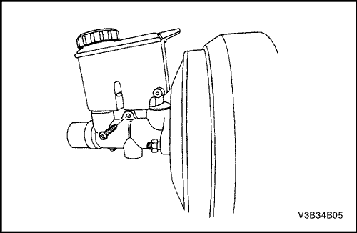

SECCIÓN 4B
CILINDRO MAESTRO
ESPECIFICACIONES
Especificaciones de apriete de la sujeción
| Aplicación | N•m | Árbol de transmisión izquierdo | Articulación |
| Tuercas de fijación del cilindro maestro | 13 | - | 115 |
| Tuberías de frenos del cilindro maestro | 16 | 12 | - |
| Tuberías de frenos de la válvula dosificadora | 16 | 12 | - |
| tuerca de la válvula dosificadora | 10 | 7 | - |
MANTENIMIENTO Y REPARACIÓN
servicio con vehículo en marcha


Conjunto de cilindro maestro
Procedimiento de desmontaje
- Desenchufe el conector del cableado que va montado en la parte superior del depósito de líquido de frenos.
- Desmonte el interruptor de nivel del líquido de frenos deslizándolo fuera del depósito. No es necesario vaciar el depósito.
- Desmonte el interruptor de nivel del líquido de frenos y el cableado del depósito de líquido de frenos.
- Desconecte las tuberías de los frenos del cuerpo del cilindro maestro.
- Desmonte el manguito del embrague del cilindro maestro.
- Coloque tapones en los orificios de las tuberías de freno para evitar la pérdida de líquido de frenos o su contaminación.
- Quite las tuercas de fijación del cilindro maestro.
- Desmonte el conjunto del cilindro maestro.
- Extraiga el líquido de frenos.
procedimiento de montaje
- Monte el conjunto del cilindro maestro con sus tuercas de fijación.
Apretar
Apriete las tuercas de fijación del cilindro maestro hasta 13 N•m (115 lb-pulg.).
- Conecte las tuberías de los frenos del cuerpo del cilindro maestro.
Apretar
Apriete las tuberías de frenos del cilindro maestro hasta 16 N• m (12 lb-pie).
- Monte el interruptor de nivel bajo del líquido de frenos introduciéndolo por el lado del depósito de líquido de frenos opuesto al motor.
- Instale el conector para el interruptor de nivel bajo del líquido de frenos deslizándolo en su fijación en la parte superior del depósito de líquido de frenos.
- Conecte el interruptor de nivel del líquido de frenos al cableado.
- Añada líquido de frenos.
- Compruebe si hay fugas.
- Vuelva a comprobar el nivel de líquido de frenos.
- Purgue el sistema de frenos. Consulte la Sección 4F, Sistema antibloqueo de frenos.
Depósito de líquido de frenos
Procedimiento de desmontaje
Importante: Desmonte el depósito de líquido de frenos sólo cuando haya que sustituirlo debido a daños o fugas.
- Desenchufe el conector del cableado que va montado en la parte superior del depósito de líquido de frenos.
- Desmonte el interruptor de nivel del líquido de frenos y el cableado. Deslice el interruptor fuera del depósito. No es necesario vaciar el líquido.

- Quite el tornillo que sujeta el depósito de líquido de frenos al cuerpo del cilindro maestro.
- Retire el depósito de las abrazaderas de retención haciendo palanca ligeramente hacia arriba con un destornillador.
- Desmonte el depósito de líquido de frenos del cuerpo del cilindro maestro inclinando el depósito y tirando de él hacia arriba.
- Quite del cuerpo del cilindro maestro los retenes del depósito y deséchelos.
procedimiento de montaje
- Lubrique los retenes nuevos del depósito de líquido de frenos con líquido de frenos limpio.
- Coloque los retenes del depósito de líquido de frenos en el cuerpo del cilindro maestro.
- Monte el depósito de líquido de frenos en el cuerpo del cilindro maestro.
- Añada líquido de frenos.
- Levante y apoye el vehículo adecuadamente.
- Purgue el sistema de frenos. Consulte la Sección 4F, Sistema antibloqueo de frenos.
- Purgue el cilindro maestro del embrague. Consulte la Sección 5C, Embrague.
- Baje el vehículo.
- Monte el interruptor de nivel bajo del líquido de frenos introduciéndolo por el lado del depósito de líquido de frenos opuesto al motor.
- Instale el conector para el conjunto del interruptor de nivel bajo del líquido de frenos deslizándolo en su fijación en la parte superior del depósito de líquido de frenos.
- Conecte el interruptor de nivel del líquido de frenos al cableado.
REPARACIÓN DE LA UNIDAD
Mantenimiento de cilindro maestro
procedimiento de desmontaje (desarmado, desensamble, desensamblaje)
- Desmonte el cilindro maestro. Consulte el apartado "Conjunto del cilindro maestro" en esta sección.
- Desmonte el depósito de líquido de frenos. Consulte el apartado "Depósito de líquido de frenos" en esta sección.
- Quite el tornillo del cilindro.
Aviso: Cuando desmonte el anillo elástico de retención, procure no causar daños al pistón o a la pared del cilindro.
- Para quitar el anillo elástico de retención del cuerpo del cilindro presione sobre el eje hueco y con unos alicates de puntas finas agarre y apriete el anillo. Una vez quitado el anillo elástico de retención, deséchelo.
- Desmonte el conjunto del pistón primario y la arandela.
- Desmonte cuidadosamente el conjunto del pistón secundario, incluyendo el muelle, de la camisa del cilindro maestro.
Procedimiento de montaje (armado, ensamblaje)
Aviso: No utilice abrasivos en el alojamiento del cilindro maestro. El empleo de abrasivos puede causar daños a la camisa.
Importante: Las piezas de goma y anillos elásticos de retención deben desecharse y sustituirse por piezas nuevas.
- Limpie las piezas con alcohol desnaturalizado o líquido de frenos limpio. Séquelas con aire comprimido.
- Inspeccione si la camisa del cilindro maestro está rayada o corroída. Si lo estuviera de forma evidente, sustituya el cuerpo del cilindro maestro.
- Lubrique la camisa del cilindro maestro con líquido de frenos limpio.
- Introduzca con cuidado el alojamiento del conjunto del pistón secundario hasta que el pistón secundario haga contacto con la base del cuerpo del cilindro. Si fuera necesario, emplee un botador de plástico o de madera.
- Introduzca la arandela y el conjunto del pistón primario.
Aviso: Cuando coloque la arandela y el anillo elástico de retención nuevo, tenga cuidado de no dañar la camisa del cilindro.
- Presione con un botador de plástico o de madera para meter los pistones en la camisa del cilindro.
- Introduzca la arandela y el anillo elástico de retención nuevo en la ranura de la camisa del cilindro.
- Coloque el tornillo de retención en el fondo del cilindro maestro y apriételo hasta que salga por la parte inferior del conjunto del pistón.
- Coloque una nueva junta tórica sobre el cuerpo del cilindro.
- Monte el depósito de líquido de frenos. Consulte el apartado "Depósito de líquido de frenos" en esta sección.
- Monte el cilindro maestro. Consulte el apartado "Conjunto del cilindro maestro" en esta sección.
- Levante y apoye el vehículo adecuadamente.
- Purgue el sistema de frenos. Consulte la Sección 4F, Sistema antibloqueo de frenos.
- Baje el vehículo.
DESCRIPCIÓN GENERAL Y FUNCIONAMIENTO DEL SISTEMA
Cilindro maestro
El cilindro maestro está diseñado para su empleo en un sistema dividido diagonalmente. El pistón primario acciona un freno delantero y otro freno trasero, diagonalmente opuesto al primero. El pistón secundario acciona los otros frenos delantero y trasero diagonalmente opuestos. El cilindro maestro incorpora las funciones de un cilindro maestro doble estándar, además de un indicador de nivel bajo de líquido. La válvula dosificadora, montada en los límites del mamparo de separación, limita la presión de salida en los frenos traseros una vez que la presión del cilindro maestro ha alcanzado previamente un valor determinado.
Aviso: No use aire comprimido de taller con aceite en su contenido en las piezas del sistema de frenos porque podría dañar las piezas de goma.
Importante: - Sustituya todos los componentes incluidos en los kits de reparaciones utilizados para reparar este cilindro maestro.
- Lubrique las piezas de goma con líquido de frenos limpio para facilitar su montaje.
- Si se desmonta o se desconecta cualquier componente del sistema hidráulico, puede resultar necesario tener que purgar la totalidad o una parte del sistema de frenos. Consulte la Sección 4F, Sistema antibloqueo de frenos.
- Los valores de los pares de apriete especificados son para elementos de sujeción secos y sin lubricar.
- Efectúe todas las labores de reparación en un banco limpio y libre de todo resto de aceite mineral.
Válvula dosificadora
La válvula dosificadora limita la presión de salida en los frenos traseros, una vez que la presión del cilindro maestro ha alcanzado previamente un valor determinado. Ésta se usa cuando se necesita menos fuerza de aplicación trasera para obtener un frenado óptimo.
Sensor de nivel de líquido
El depósito del cilindro maestro va provisto de un sensor de nivel del líquido de frenos. El sensor activará la luz del freno cuando el nivel de líquido sea bajo. La palanca del freno de estacionamiento también activa luz del freno, que se enciende en la prueba de lámparas cuando se gira la llave de contacto a la posición ON y el motor no está en marcha. Para realizar un diagnóstico de la luz de freno, consulte la
Sección 4A, Frenos hidráulicos.